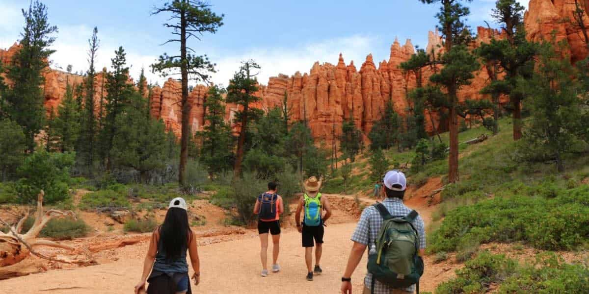
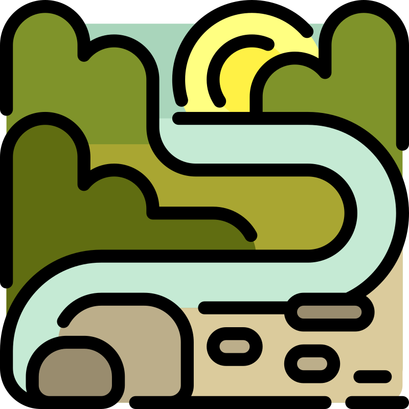

Why do we hike up?

"Because every trail tells a story, and we’re here to help you write yours. From the towering peaks of the Wasatch to the breathtaking canyons of Moab, we believe adventure isn’t just about the destination—it’s about the journey. We hike up to disconnect from the noise, reconnect with nature, and experience the raw beauty of Utah, one step at a time."

"In every walk with nature, one receives far more than he seeks." – John Muir